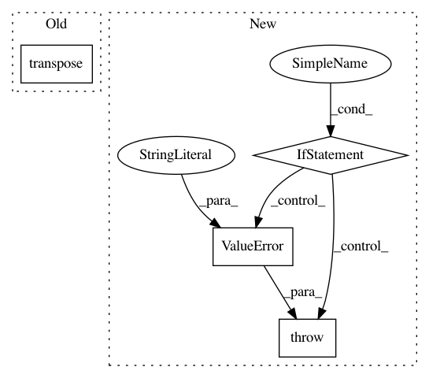

140b558954c61e77551ff93545864b78b086e1b1,chainercv/utils/image/read_label.py,,read_label,#Any#Any#,5
Before Change
return img[np.newaxis]
else:
// transpose (H, W, C) -> (C, H, W)
return img.transpose((2, 0, 1))
After Change
if img.ndim == 2:
return img
elif img.shape[2] == 1:
return img[:, :, 0]
else:
raise ValueError("Color image can"t be accepted as label image.")
In pattern: SUPERPATTERN
Frequency: 3
Non-data size: 4
Instances
Project Name: chainer/chainercv
Commit Name: 140b558954c61e77551ff93545864b78b086e1b1
Time: 2019-01-28
Author: 69guitar1015@gmail.com
File Name: chainercv/utils/image/read_label.py
Class Name:
Method Name: read_label
Project Name: keras-team/keras
Commit Name: 9148325b9ca9edf94aaebd453b3cf86dba2ef99a
Time: 2018-10-25
Author: farizrahman4u@gmail.com
File Name: keras/backend/theano_backend.py
Class Name:
Method Name: batch_dot
Project Name: chainer/chainercv
Commit Name: b776ae08e9e676435c5cf8d1f31a86dfd3e1897f
Time: 2018-10-20
Author: yuyuniitani@gmail.com
File Name: chainercv/utils/image/read_image.py
Class Name:
Method Name: read_image